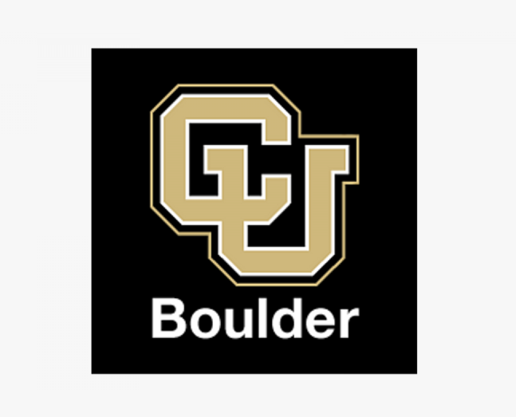
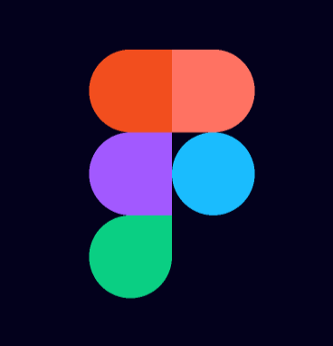

Hello, welcome to my website!

I'm Renato Barrera, a Computer Engineer graduate who is interested in all subjects of tech.
My main interests are in frontend development, backend development, networking, and UX/UI,
though I also have experience with databases and data science. Continue scrolling to learn a
bit more about me and what I've worked on.
REU Experience
Back in the summer of 2021, I had the chance to join a new research experience
with the ATOC group at the University of Colorado Boulder (CU). With the help of
an amazing professor and mentor, I worked on a project to view the trends of the Sun's incoming
radiation and its effects on the Arctic ice. At the end of the research experience,
I summarized my journey and findings in a poster, which I've linked to this site as
well. Some of the technologies used included Python, Matplotlib, Pandas, Mac command
line, and Jupyter notebook.

Steam App Redesign
For our UX/UI project, I grouped with 3 others in order to redesign the less than
stellar Steam app at the time. We went through the entire makeover progress which
included performing a user journey to find issues, brainstorming solutions, interviewing
current users, sketching possible designs, and ultimately creating the prototype on Figma.
I learned a great deal about Figma and its tools, and also improved my designing, interviewing,
and teamwork skills.
